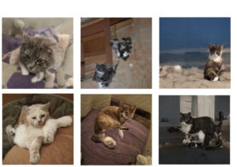

{#9} Pecore elettriche

«Bender, a me non interessa se sei ricco. Ti amo per la tua intelligenza artificiale e il simulatore di sincerità»
Futurama
Buongiorno umani,
abbiamo appuntamento con la regina! Arriviamo tra poco. Intanto, sappiate che Scienceground è un progetto condotto da volontari del Centro di Giornalismo Investigativo. La comunità ExTemporanea che lo cura è una delle più vecchie e attive su Discord, e continua ad essere la più valida risorsa di supporto e informazioni. In occasione di Festivaletteratura era tradizione decorare la “nave” dandole la forma di un bel fiore. Scienceground è iniziato in maniera abbastanza semplice, ma durante le sue quasi nove ore è diventato sempre più complicato. A metà giornata, poco poteva dissuaderti dal pensare che lo spettacolo non fosse semplicemente una parodia dell’industria del cinema di Hollywood. Lo scorso settembre a Mantova sono venute molte persone giovani che hanno partecipato alla protesta contro la brutalità della polizia nella città. Ringraziamo tutti quelli che ci hanno visitato all’ospedale e alla guardia medica da tutta Australia, Irlanda e Nuova Zelanda – ringraziamo sinceramente tutti i nostri fan in giro per il mondo!
Siamo forse impazziti? Beh, questi paragrafi sono stati completati da un algoritmo che sta imparando a scrivere come gli umani, partendo da qualche parola iniziale ed estrapolando testi nuovi da materiali reperiti online.
Una delle nostre tematiche preferite sono proprio gli algoritmi di apprendimento automatico (anche detti AI, “intelligenza artificiale”). Festivaletteratura 2019 ha dato ampio spazio al tema, dedicando un ciclo di lezioni alla lavagna e vari spazi di discussione a Scienceground. Sul nostro blog raccontiamo alcune delle attività.
Nel frattempo che le macchine imparano a scrivere come gli umani, noi di ExTemporanea ci alleniamo a scrivere come nessuna macchina saprà mai fare. E lo facciamo proprio mimando i computer!
La giovane rivista di critica letteraria Passaporto Nansen ci ha invitato a proporre una riflessione su cosa è successo negli ultimi venti anni di vita culturale italiana (sic!). E data l’evidente urgenza, abbiamo imbastito questo algoritmo umano:
- Entro lunedì sera appuntate una frase, un paragrafo, un capoverso, che secondo voi potrebbe inserirsi all’interno di un discorso complessivo;
- Entro lunedì sera chi vuole si candida a diventare editore-autore-curatore dell’articolo;
- Entro mercoledì sera i curatori-editori-autori avranno letto il materiale e cominceranno il lavoro di organizzazione del materiale;
- Entro venerdì sera la bozza di articolo viene inoltrata a tutto il resto del gruppo; dopodiché ognuno potrà metterci mano come meglio crede;
- Entro domenica mattina facciamo l’ultima revisione;
- Entro Lunedì mattina, 30 Settembre, l’articolo viene mandato, così com’è, a Passaporto Nansen.
Il prodotto, intitolato Questo articolo è stato generato da un algoritmo umano, si può leggere sul cartaceo della rivista (solo due euri! regalatevene una copia se la trovate…), e sul nostro sito.
Un piccolo assaggio:
«Festivaletteratura è stato capostipite dell’ondata festivaliera che ha investito l’Italia negli ultimi vent’anni. È forse tempo allora di discutere cos’è stata questa epopea, nel bene e nel male. Tante domande ci arrovellano. Se la festa è il momento finale di un percorso lungo e faticoso (come la sagra stava al raccolto), qual è il percorso di cui i festival sono il momento finale? Esiste un’intercapedine in cui i festival possono agire da mediatori sociali tra i cittadini e le altre istituzioni (scuola, università, editoria, assessorati, etc.), tutte altrettanto coinvolte nella stessa identica crisi? Quali aspetti spirituali/comunitari sono tutelati dai festival?»
Abbiamo davvero seguito l’algoritmo? La risposta è: più o meno (più meno che più). L’algoritmo umano è diventato variabile, amorfo. È servito come a un jazzista serve la pagina del Real Book per la sua improvvisazione.
Può un algoritmo di machine learning deviare dalla regola, comprendere (in tutti i sensi) il contesto in cui si muove? È questa la domanda che ci poniamo, e a cui, come al solito, non diamo risposta.
Ma cos’è l’AI?
Quando nel 1956 venne coniata quest’espressione durante una conferenza al Dartmouth College, John McCarthy, che l’aveva organizzata, sostenne che il gruppo di scienziati che aveva convocato sarebbe riuscito a emulare ogni aspetto dell’intelligenza umana in soli due mesi. Sessant’anni dopo questo non è ancora successo: le macchine sono in grado di superarci in molte sfide, ma sempre una sfida alla volta. Un’intelligenza universale, così come lo è quella umana, in grado potenzialmente di risolvere ogni tipo di problema, ancora non esiste e non siamo neppure in grado di prevedere se esisterà mai. Gli algoritmi sono specifici, vengono addestrati esattamente per il compito che devono svolgere. Hanno potenzialità, rischi, vantaggi e svantaggi.
Tuttavia l’AI viene propagandata in maniera molto diversa. Vi proponiamo una traduzione dell’abstract dell’articolo di Yarden Katz, Manufacturing an Artificial Intelligence Revolution (qui l’articolo integrale in inglese).
«In anni recenti AI è diventato il centro dell’interesse dei media mainstream. Tuttavia non è chiaro quali siano le forze dietro il revival dell’AI. In questo articolo sostengo che l’etichetta “AI” sia stata ri-brandizzata per promuovere una discutibile visione del governo globale attraverso i big data. Le principali compagnie tecnologiche hanno giocato un ruolo chiave nella sua riformulazione, in parte assumendo accademici che lavorano sui big data (i quali sono stati efficacemente rinominati “AI”), e aiutando a creare la sensazione che un’AI superumana sia imminente. Tuttavia, come argomenterò, gli ultimi sistemi di AI pongono le loro premesse su un vecchio modello comportamentale dell’intelligenza che è molto lontano dal comprendere il pensiero umano. In pratica, la confusione attorno alle capacità dell’AI serve come pretesto per imporre ancora più metriche sulle imprese umane, e per avanzare pratiche neoliberali tradizionali. La nuova AI, come i suoi predecessori, cerca l’intelligenza con una “vista dal vuoto siderale” (che non considera la razza, il genere, la classe) – la quale può essere usata per mascherare il potere istituzionale nelle visioni della gonvernance fondata sulla AI. Infine, la riformulazione dell’AI dimostra come gli interessi delle corporazioni possono rapidamente riconfigurare i campi del sapere accademico, ed è illuminante di come un termine tecnico nebuloso (AI) può essere sfruttato per guadagni politici.»
Per capire come i limiti dell’intelligenza artificiale, Harry Collins in Artifictional Intelligence (Cambridge University Press, 2018) invita a essere e pragmatici:
«Tu, caro lettore, con un piccolissimo sforzo, puoi dimostrare le limitazioni dei computer immediatamente immaginabili qui ed ora: scrivi nel tuo laptop, o equivalente, qualcosa del tipo ‘Sto per scrivere sbaliato per dimostrare un punto’. Noterai che il tuo computer insiste a segnalare o correggere sbaliato come un errore di ortografia (ecco che lo fa di nuovo mentre scrivo). D’altra parte, tu ed io e il correttore bozze (se è concentrato) capiremo immediatamente che in questo caso io voglio scrivere senza il “gl”, anche se l’ortografia prevede il “gl”, quindi in questo caso non c’è nulla da correggere.
Questo errore, apparentemente banale, non è soltanto un bug facilmente aggiustabile del tuo correttore di testo; e neppure, come argomenterò, è questo il tipo di problema da cui saremo travolti nei nuovi sviluppi del deep learning e tutto il resto; ma indica proprio un problema fondamentale dell’intelligenza artificiale. L’errore avviene perché per apprezzare il fatto che sbaliato (di nuovo…) non è un errore di ortografia bisogna comprendere il contesto del suo uso, e per quando validi siano i computer in questi giorni, e per quanto migliori saranno in futuro, i computer non valutano il contesto nel modo intuitivo degli umani.»
Anche a noi piace sporcarci le mani e capire le cose a modo nostro. Chiacchierando tra di noi e con i visitatori, nel corso del festival è sorta l’idea di creare e poi ampliare un angolo dedicato ai rudimenti tecnici e concettuali del machine learning. Dato l’interesse suscitato nel pubblico, l’angolo è poi evoluto in un vero e proprio laboratorio.
L’attività consisteva nel far imparare ad un computer di scatole (sic!) a giocare a NIM, un gioco ammazzanoia da banco scolastico alternativo al tris. Nel NIM si prepara uno schema di lineette verticali, per esempio (al quinto livello):
|
| |
| | |
| | | |
| | | | |Nella versione del NIM che abbiamo impiegato noi, i due giocatori (che chiameremo senza molta fantasia Alice e Bobo) si alternano a barrare quante lineette vogliono, purché consecutive e appartenenti alla stessa riga. Vince chi rimuove l’ultima. Per esempio una partita può svolgersi così:
Alice:
|
| |
| | |
| | | |
| + + + +Bobo:
+
| |
| | |
| | | |
| + + + +Alice:
+
| |
| | |
| + + |
| + + + +Bobo è nel sacco! Da qui in poi si può vedere che, qualsiasi cosa faccia Bobo, Alice può sempre vincere. Molto più difficile è capire se Alice avrebbe potuto vincere fin dall’inizio adottando una strategia intelligente. Sicuramente Alice vince al livello 1,2, e 4. Bobo vince al 3. Esiste una strategia vincente (per Alice o per Bobo) al livello 5? Manda la tua risposta a scienceground@festivaletteratura.it e vincerai.
Il nostro computer di scatole ha imparato a giocare al secondo livello del NIM:
|
| |Ovviamente anche qui Alice vince sempre. Ma come farlo imparare ad un congegno meccanico? Beh, semplice, basta tradurre le configurazioni in scatole, le mosse in pezzi del domino colorati, e il processo di apprendimento come… Qui puoi trovate una descrizione più accurata (e in continua evoluzione) del laboratorio, qui puoi trovare una digressione da veri nerd su quante scatole e quanti pezzi colorati servono per “programmare” la macchina. Manco ci fosse bisogno di dirlo, c’entra Fibonacci…
Nel condurre la chiacchierata che ha portato finalmente all’algoritmo vincente siamo andati a caso, a piccoli passi, valutando la risposta dei partecipanti, proprio come gli algoritmi di machine learning. Il risultato ci ha piacevolmente colpito: come spesso succede nei casi di training non controllato, le macchine scoprono nicchie dello spazio computazionale non ancora esplorate. Così il nostro laboratorio si è concluso con una lezione di teoria del controllo, improvvisata forse più del laboratorio stesso, tenuta da un membro del pubblico.
Questa tematica ci accompagna già dal 2018, dalla prima edizione Scienceground 2. Con il prof. Giuseppe De Nicolao discutemmo il libro della matematica Cathy O’Neil, Armi di distruzione matematica che analizza, a partire dall’esperienza americana, l’aspetto pervasivo e parzialmente connotato degli algoritmi che ormai svolgono un ruolo fondamentale in ogni tappa principale della vita di un contemporaneo statunitense. Pervasivo vista appunto l’ubiquità di queste “scatole nere” come oracoli della modernità con il potere di emanare responsi condizionanti sempre di più le nostre vite sotto una mentita spoglia di oggettività. In realtà, mostra O’Neil, l’applicazione degli algoritmi alle sfere umane e sociali si rivela troppo spesso essere una codificazione (più o meno consapevole) di pregiudizi e preconcetti, parzialità assolutamente umane! E soprattutto derivate dalle disuguaglianze economiche e sociali che l’utilizzo di tali strumenti non fa che riprodurre, legittimare e rafforzare in un pernicioso circolo vizioso.
Nel prepararci ad affrontare la discussione avevamo formulato qualche domanda a Cathy O’Neil (rimaste per ora senza risposta).
C’è vita (anche) fuori Mantova: a pochi giorni dalla fine della XXIII edizione di Festivaletteratura, siamo entrati nel mondo accademico per discutere di scienza e letteratura, a Pisa, al Congresso Nazionale dell’Associazione degli Italianisti, contribuendo al dibattito con un panel dal tema Ibridazioni narrative: come ripensare la comunicazione scientifica.
In quell’occasione il matematico Mattia Galeotti ha da subito segnato il campo da gioco, mettendo in discussione il ruolo della Scienza come dispensatrice di verità dentro le strutture del potere, proprio partendo dagli algoritmi di analisi dei big data:
«In molte corti giudiziarie degli Stati Uniti d’America è oggi permesso l’utilizzo del COMPAS, cioè il Correctional Offender Management Profiling for Alternative Sanctions, un sistema di profilazione degli imputati che attraverso una procedura algoritmica determina il rischio di recidività e quindi diventa uno strumento di supporto dell’attività giudiziaria. Questo oggetto, che sembra uscito direttamente da un racconto distopico ma che è già presente e largamente utilizzato, si propone di dare descrizione di una realtà naturale. Allo stesso tempo per produrre l’informazione elaborata da COMPAS è necessaria una precisa organizzazione sociale e delle autorità di polizia e controllo. Inoltre questo sistema agisce direttamente sul corpo sociale, coadiuvando l’attività giudiziaria, e quindi non si limita a descriverlo.»
Il racconto della giornata prosegue sul sito del festival. Gli abstract degli interventi si possono trovare sul nostro blog.
E ancora si è parlato di intelligenza artificiale allo spazio-laboratorio L’Isola di Bologna:
«Se l’intelligenza è un tratto che distingue l’uomo rispetto alle altre specie viventi, dovrà essere frutto di un artificio, o di un errore evolutivo. Ecco allora che fantastichiamo di algoritmi che eseguono il pensiero umano e di macchine inanimate che si ribellano per un errore di programmazione. In questo laboratorio discuteremo della cosidetta “Intelligenza Artificiale”: come funzionano gli algoritmi di analisi dei big data, quali modelli dell’intelligenza umana presuppongono, e quali contesti sociali sono sottoposti al dispiegamento di questo strumento. E di come mai, di fronte al pianto di un bambino, Terminator-Schwarzenegger afferma: it’s something I can never do.»
ExTemporanea correntemente non sta organizzando nessuno di questi eventi, e per un po’ abbiamo usato il server solo occasionalmente. Anche se speriamo che quelli che mantengono il server continueranno ad essere partecipanti attivi, ci sono piani per far diventare il server più attivo e provvedere ulteriori funzioni in futuro. Ciò detto, abbiamo ancora bisogno del tuo aiuto! Questi eventi non hanno molti membri paganti e solo poche persone sono su Discord, quindi se vuoi aiutare a farne funzionare uno, avremmo bisogno che tu facessi partire un segmento in cui le persone ti possano rintracciare. Se vuoi essere parte della conversazione che guida gli eventi, avrai anche tu bisogno di un sacco di aiuto. Unisciti nel nostro Discord, o nel server Discord, dove i moderatori sono più che felici di darti il benvenuto!
ET
PS. Ceci n’est pas une personne: le immagini, tratte dal sito thispersondoesnotexist, non sono fotografie: sono generate automaticamente da un algoritmo (Karras et al., Nvidia). L’autore del sito ci ha consentito l’utilizzo delle immagini perché «fun fact, the images are actually owned by no one since no human creativity went into them». Gli abbiamo chiesto: «Well, some human wrote the code, so there is some creativity into it?». «No, because the code actually captures some process of nature». Natura o artefatto?
